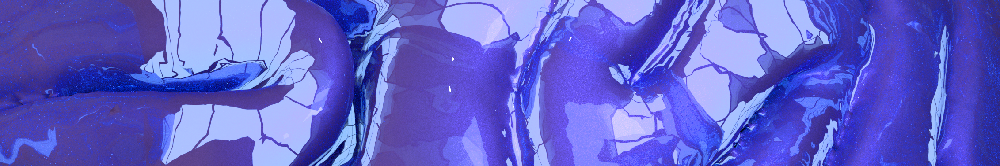

Open-Source Solutions for Modern Neuroscience
New Atlantis Laboratories produces open-source software and hardware intended to aid the international neuroscience research community. New Atlantis Labs takes its name from the 1626 utopian novel by Sir Francis Bacon, in which he described a fictitious island on which people held attitudes towards the free and open dissemination of knowledge that we refer to today as ‘open science’.